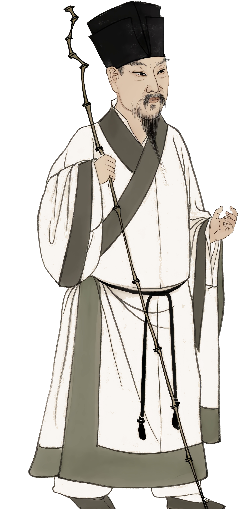

听见风雨，
也听见自己
莫听穿林打叶声，何妨吟啸且徐行。

苏轼
1风雨状态
请选择最接近你的一种。这里不做心理测评，只是帮助你带着真实的自己走进《定风波》。
2分层小测
请认真读完每个选项。这里的错误选项不一定“离谱”，它们常常代表学习《定风波》时容易出现的理解偏差。
已完成 0 / 12
3听课报告
学情分析
建议重点听讲
完成分层小测后，这里会出现你的听课重点。
分项表现
完成小测后显示。
分数不是评价你“好不好”，只是帮助你找到这节课更值得专注的地方。
课后赏析提升
请试着想一想
完成小测后，这里会给你一道对应的赏析题。
智能体对话建议
可以这样问东坡先生
完成小测后，这里会生成一个适合你的提问。
4成长卡片
苏轼对你说
“竹杖芒鞋轻胜马，谁怕？”
完成前面的风雨状态选择后，这里会根据你的状态生成一张成长卡片。
5课后小测
这里会根据你课前导入中的薄弱板块，自动推荐对应的课后巩固题。
6学生学习情况
请先选择一名学生，再查看他的风雨状态、薄弱板块、课后成绩和个性化建议。